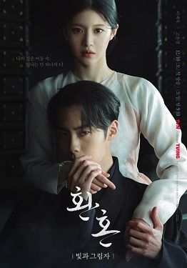
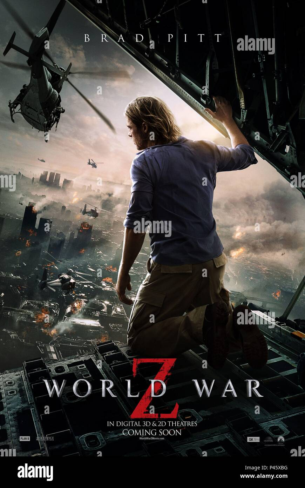
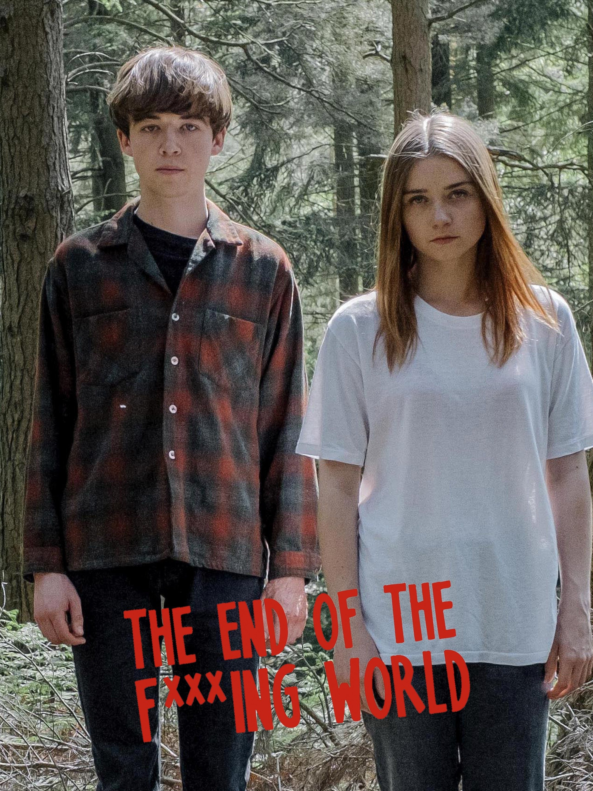

Alchemy of soul

Name: Alchemy of Souls
Cast: Lee Jae-wook, Jung So-min, Go Youn-jung, Hwang Min-hyun
Release Date: June 18, 2022
Rating: 8.7
- Set in a mystical world, the story follows the journey of a young mage who seeks to master the ancient art of soul alchemy.
- The series explores themes of love, betrayal, and the eternal struggle between good and evil.
- As the protagonist delves deeper into the secrets of this powerful magic, they encounter allies and adversaries who shape their destiny.
World War Z

Name: World War Z
Cast: Brad Pitt, Mireille Enos, Daniella Kertesz
Release Date: June 2013
Rating: 7.0
- The story follows Gerry Lane, a former United Nations investigator, as he races against time to find a solution to the outbreak.
- The film explores themes of survival, sacrifice, and the resilience of the human spirit in the face of overwhelming odds.
- With intense action sequences and a gripping narrative, "World War Z" keeps viewers on the edge of their seats from start to finish.
The end of F***ing world

Name: The end of F***ing world
Cast: Jessica Barden, Alex Lawther, Steve Oram
Release Date: May 2017
Rating: 8.0
- The story centers on James, a self-proclaimed psychopath, and Alyssa, a rebellious girl searching for her estranged father.
- The series explores themes of alienation, trauma, and the search for identity in a world that often feels indifferent.
- With its unique blend of humor and poignancy, "The End of the F***ing World" offers a raw and compelling look at the complexities of adolescence.